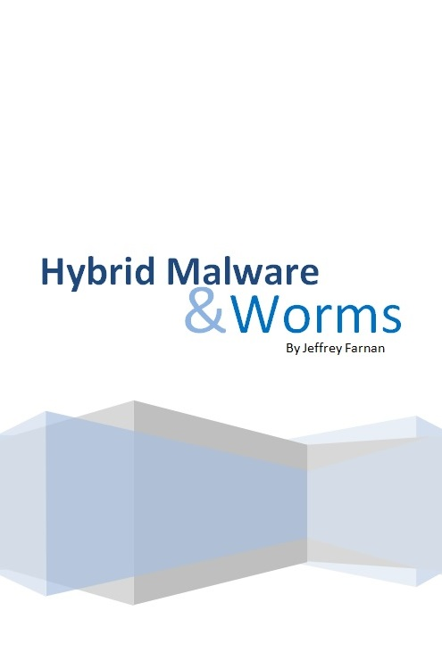
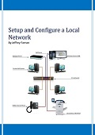

Reverse Engineering and Threat Reports
A selection of reports related to reverse engineering and threats.
A selection of reports related to reverse engineering and threats.
|  Read More | HYBRID MALWARE & WORMSModern malware can be best described as hybrid malware. It can be combination of Trojan, Rootkit or self-replicating worm all built into a single cyberattack package. Hybrid malware can also act as a worm, once inside a computer it can begin to replicate. In this report we will look at a variant of hybrid malware called Trickbot and how it has evolved. Look at latest Trickbot campaigns and help to prevent Trickbot infections. |
| Read More | SANDWORM: RUSSIAN STATE HACKER GROUPSandworm is a Russian state backed Russian Hacker Group which has been carry out cyberattacks in recent years. The Group is allegedly a Russian cyber military unit in charge of Russian military intelligence and has come under many different names such as Unit 74455, Telebots, Voodoo Bear, and Iron Viking. In this report we will look at cyberattacks attributed to Sandworm. |
| Read More | ROOTKIT MALWARERootkits have been around many years and can remain undetected stealing resources, data or monitoring communications. In this report we will explore at early development of rootkits and the most common popular types and how they work. Explore modern rootkits from virtual machine to firmware rootkits and looking at various samples. Finally we will look at the prevention measures large tech organizations are taking, and the detection and removal of rootkits. |
 Read More Read More |
PATCHING EXECUTABLES TUTORIALSA patch is a set of changes to a computer program to either update or improve it. This is usually done by compiling a new executable when source code is available. When no source code is available these fixes have to be done at assembly level. This is an introduction to patching executables with step by step tutorials. |
| Read More | CRYPTOMINING & CRYPTOJACKING MALWARECryptomining malware attacks a victim’s computer by targeting its resources both energy and computing power in order to mine cryptocurrencies like bitcoin.This report will explain the different types of Cryptomining, how bitcoins are created and mined. Take a look at Cryptomining malware and how it is deployed. Will look at the top Cryptojacking malware out today and emerging trends. |
| Read More | REVERSING C++ ASSEMBLY CODEThis report will examine the assembly code of a basic C++ program after decompilition. Identifiling objectoriented programming concepts such as classes and objects at the assembly level. Reconstruct classes to make them more understandable using the x64dbg Debugger. |
 Read More Read More |
CCLEANER HACK: REVERSE ENGINEERING REPORTThis report is a deep dive into the CCleaner Hack looking at the technical aspects of the attack and how it was accomplished. Reverse Engineering the installer I can show each step of the attack process, while also showing examples of how it was done. This is a very complex attack involving many stages. The objective of this report is to make this more understandable while benefitting other Malware Researchers. |
| Read More | CERBERUS ANDROID MALWARECerberus is the name of an Android banking malware first discovered in 2019 on Google Play. It is disguised as a legitimate Android App such as a flash player, currency converter or delivery app. Cerberus is very advanced Android malware, it can bypass security measures, access text messages and commands can be sent to user’s devices and perform dangerous actions. The main purpose of Cerberus is gain access to financial information such as banking credentials and sensitive information, to generate revenue. |
 Read More Read More |
UPX PACKERS AND UNPACKINGIn this report we will look at Packers, which are tools used to hide malicious files by encrypting and compressing the file to make the code unrecognizable allowing it to bypass antivirus software. I willexplain how packers work and look at the different types of packers. There are ways to unpack malware, we will look at how this process is accomplished and the tools used to achieve it. |
 Read More Read More |
REVERSING C++ DECOMPILED CODEThis report will demonstrate the process of reverse engineering object-oriented programming concepts such as Classes, Inheritance and Virtual functions. Using a simple piece of C++ code. I will reconstruct the decompiled code to an understandable compliable format using tools such as the Snowman Decompiler and IDA Pro. |
A selection of Information Technology Reports related to Networking, CyberSecurity, Malware Analysis and Data Mining. These reports are designed to relay technical information in a professional manner.
|  Read More |
Setup & Configure A Local NetworkBuilding a network from scratch means planning, network diagrams, selecting the correct hardware for the business, installing software, what type of network is suitable, configuring the network and making sure they work correctly. Other considerations are making sure the network runs efficiently, maintained and make secure. |
| Read More | Internet Security AssessmentThis report is a security Assessment of a local Library after a number of vulnerabilities found on their computer systems. This detailed vulnerability assessment will adivse management of what systems were tested, what vulnerabilities were detected and recommendations for improving security. |
 Read More Read More |
Malware Analysis & ToolsMalware analysis helps security teams improve threat detection and remediation. Through static analysis, dynamic analysis or a combination of both techniques, security professionals can determine how dangerous a particular malware sample is. By using commercial and open source malware analysis tools, analysts can test, characterize and document different variants of malicious activates while learning about the attack lifecycle. |
| Read More | Data Mining: Mining a DatasetThis dataset was extracted from the census bureau database. It’s a collection of data that comprises of information about people between the ages of 16 to 100. The dataset contains 32561 rows of data and 14 columns containing information about people’s age, sex, income, education, marital status and where they were born, etc. The Data mining objective is to mine the dataset using the Crisp-Dm framework. The Business objective is to use information gained to help with project planning and future business needs. |